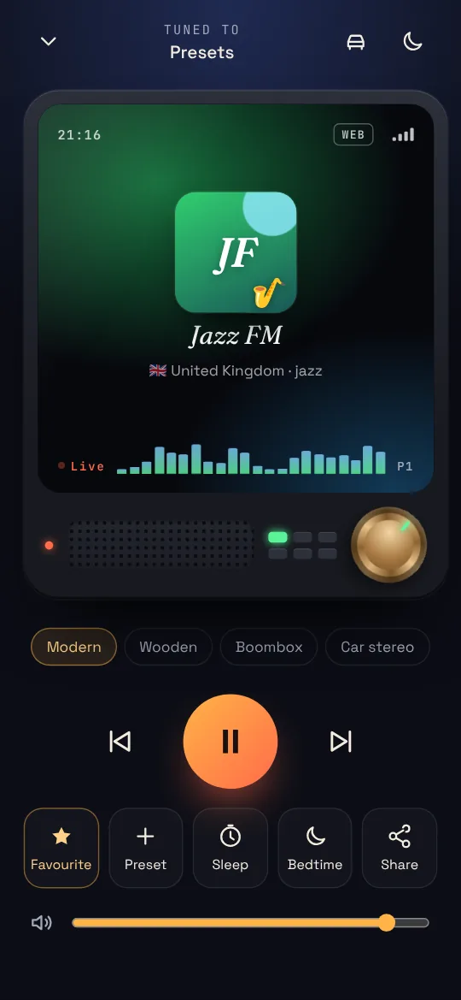
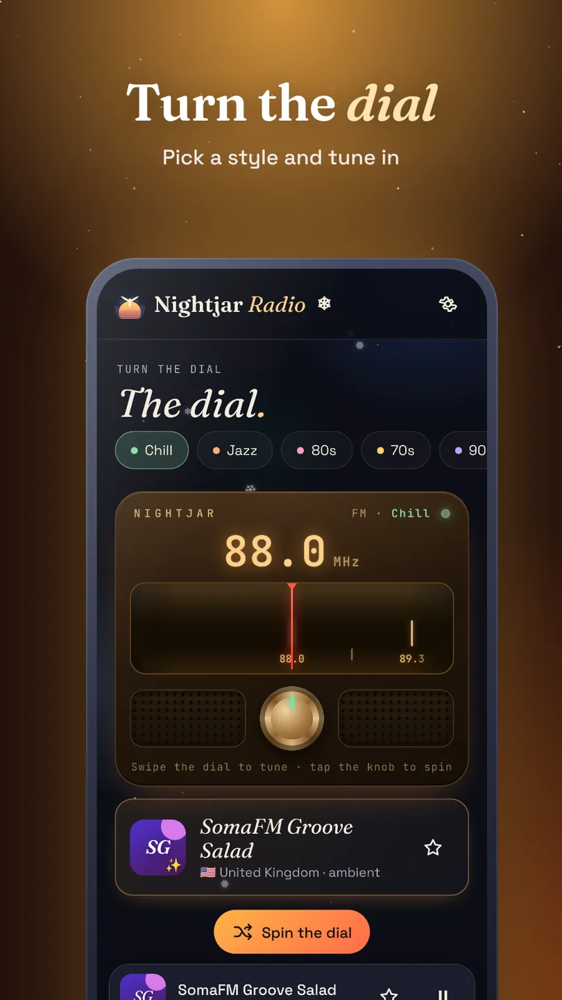
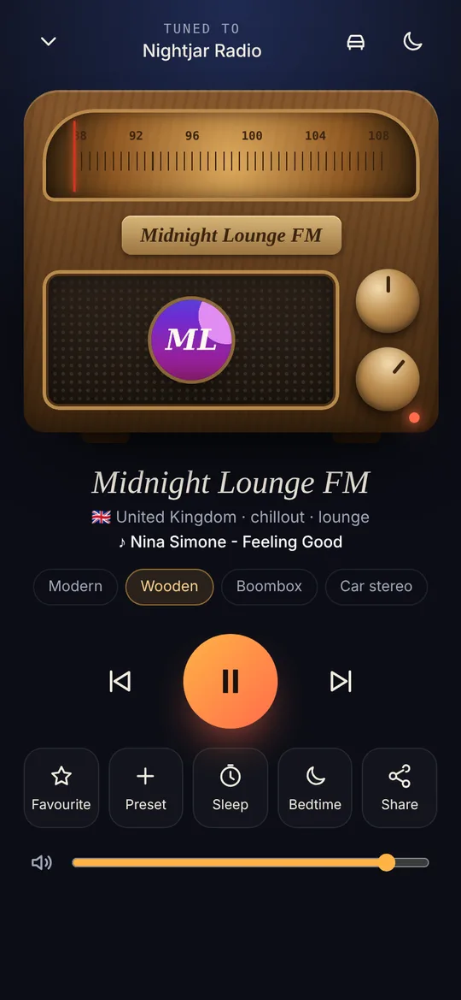
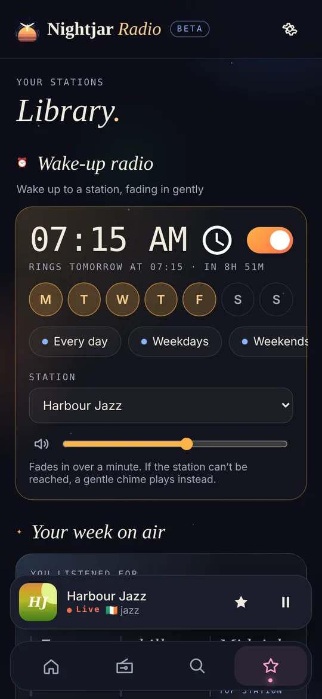
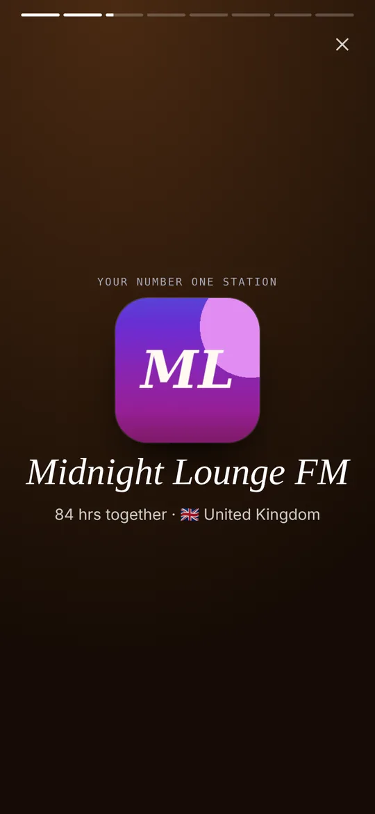

Nightjar Radio
Live radio after dark
Free live radio from over 50,000 stations around the world — presets, a real tuning dial, a spinning globe, song titles and a wake-up alarm.
⚡ Want new features first? Get the Beta Gets new versions before everyone else — may have the odd bug. You can switch back to Stable in Settings.Take a look








Swipe to see more · station names are examples
📻Six presetsJust like a real radio — one tap to tune in.
🌍Spin the globeLand somewhere it’s night-time right now.
🎵Song titlesSee what’s playing, when stations share it.*
⏰Wake-up radioFade in to your favourite station.*
🚗Android AutoYour stations on the car screen.*
🧩WidgetsPresets and controls on your home screen.*
* In the Android app.
Installing on Android
- Tap Download for Android above (in Chrome).
- When it’s downloaded, tap the file to open it.
- If asked, allow Chrome to install unknown apps, then go back.
- Tap Install. If Google Play Protect warns you, tap More details → Install anyway — this happens with any app that isn’t from the Play Store.
- Open Nightjar Radio. Future updates pop up inside the app.
On Windows, Mac or Chromebook
- Tap Open in browser above, in Chrome or Edge.
- Click the Install icon at the right of the address bar (or the ⋮ menu → Install Nightjar Radio).
- It opens in its own window and goes in your Start menu or Dock. Right-click its icon for shortcuts like Bedtime and Spin the globe.
On iPhone & iPad
- Tap Open in browser above, in Safari.
- Tap the Share button, then Add to Home Screen.
- Open it from your home screen — it works like an app, full screen.
Why the home screen? Safari can clear a website’s saved data if you don’t visit for a week — added to your home screen, your presets and favourites are kept safe.